What Drives Routine Vaccine Availability at Health Facilities?
OR 68, 8-10 September, Nottingham
Bahman Rostami-Tabar
Data Lab for Social Good, Cardiff Business School, Cardiff University, UK
Daniel Brigden
World Health Organization (WHO), Geneva, Switzerland
Vaccines are among the most effective public-health interventions
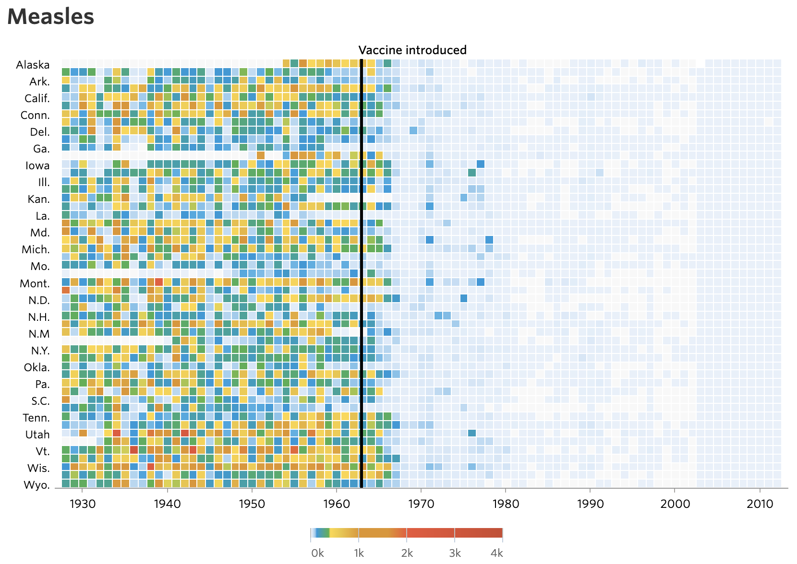
Vaccines are among the most effective public-health interventions
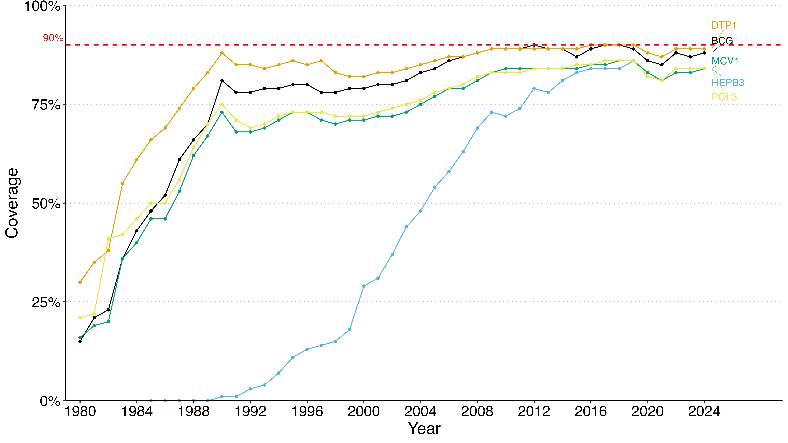
Coverage disparities exist within and between regions
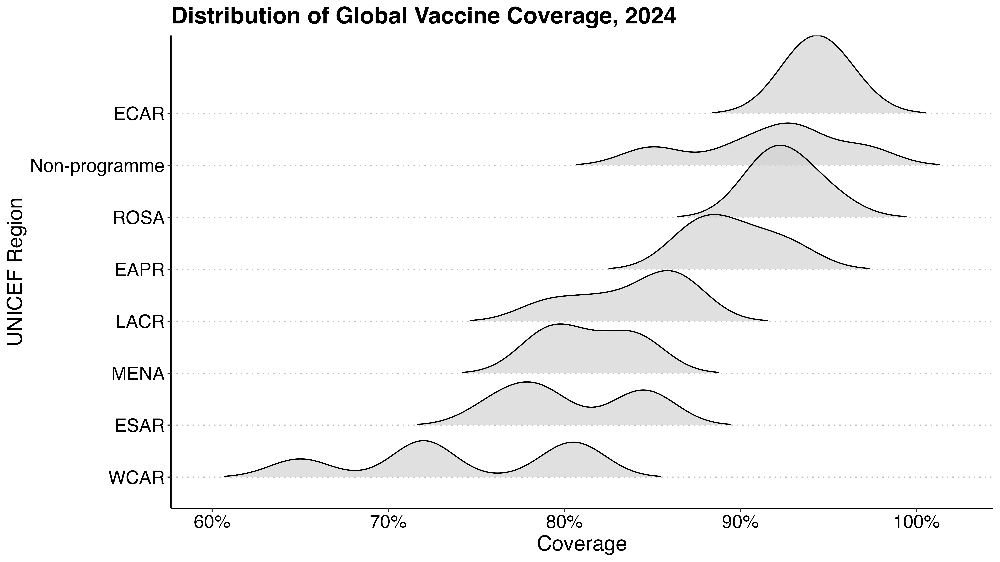
19.9 Million
Missed vaccines
13.5 Million
Zero-dose
4.9 Million
Under-five mortality
Having the vaccine is not enough
A vaccine only saves a life if it reaches the child.
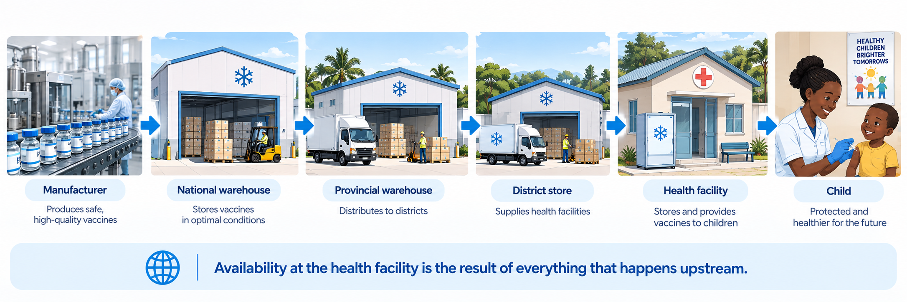
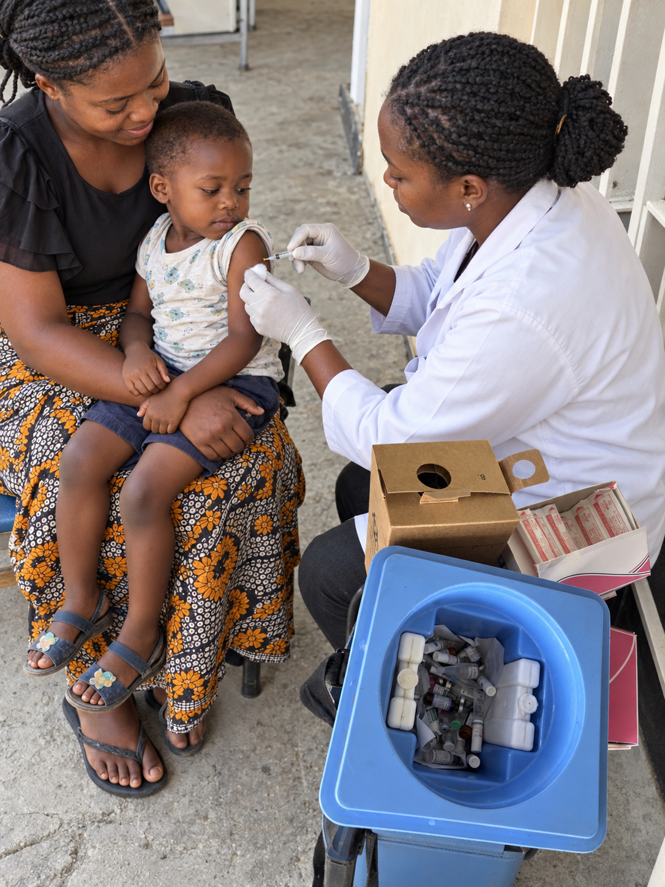
What could have gone wrong?
The child arrives. But the vaccine is not available. Why?
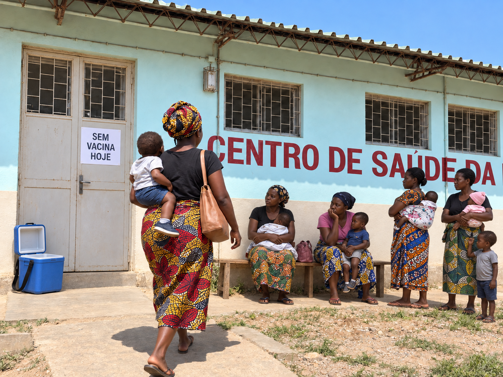
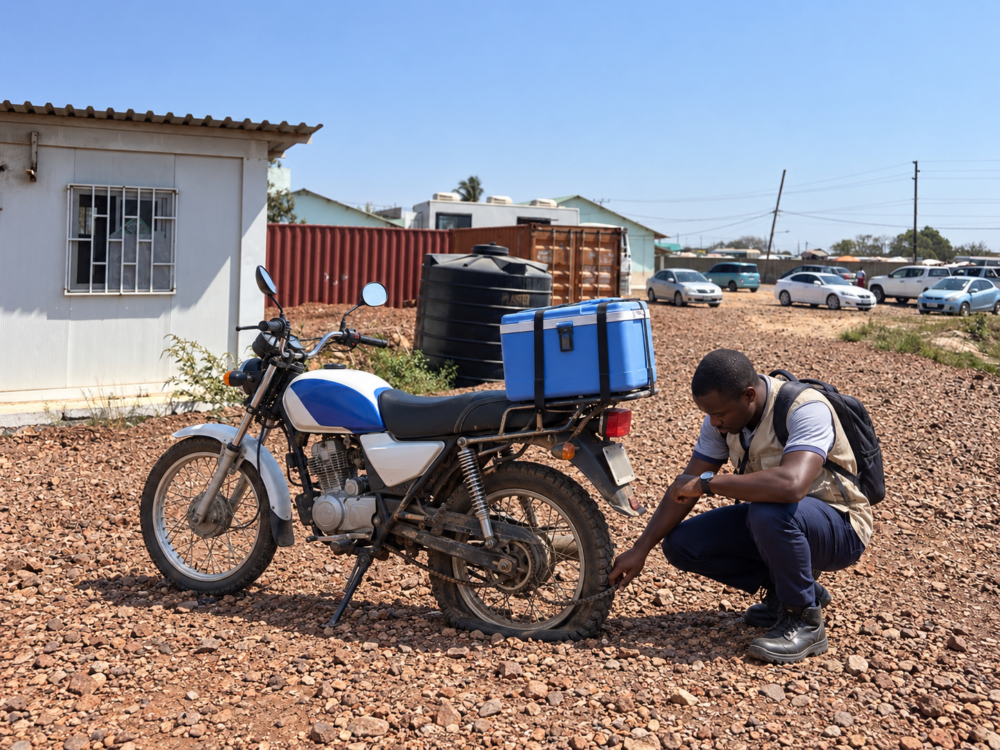
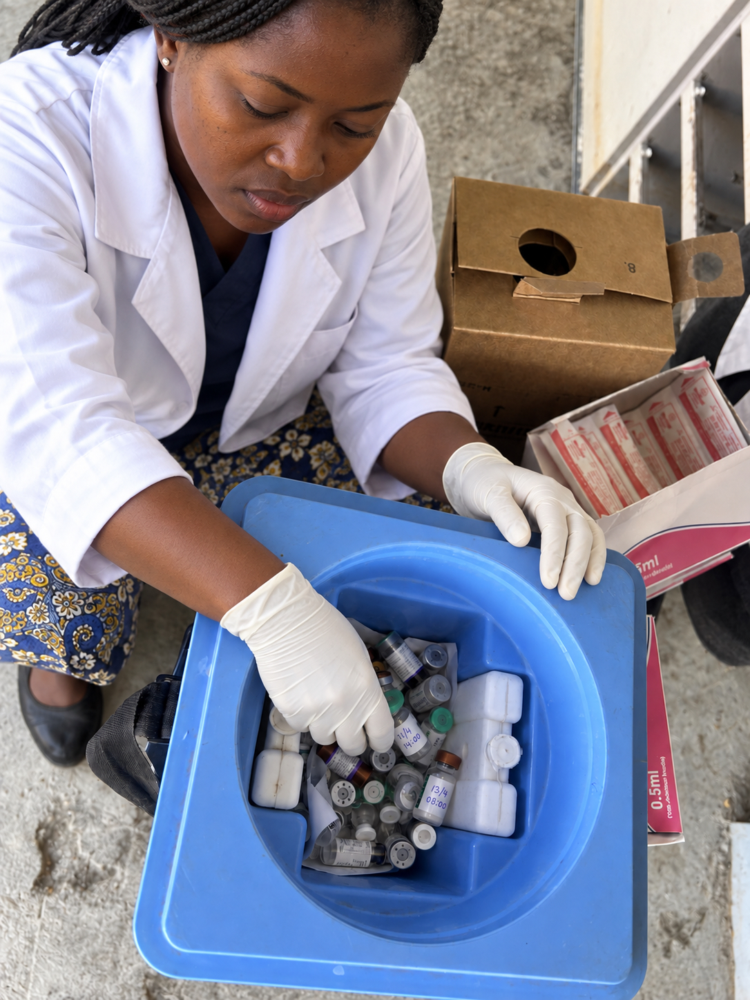
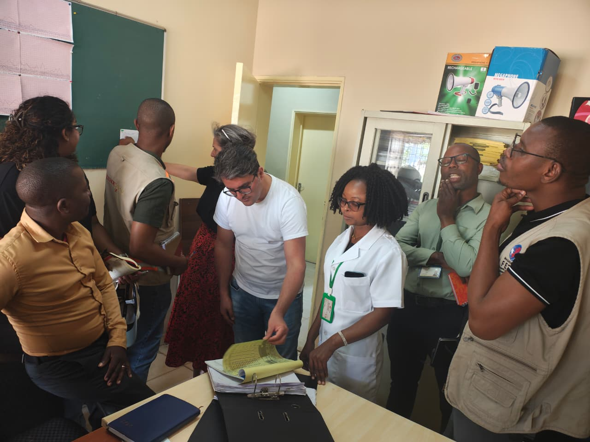
The supply chain connects vaccines to health outcomes
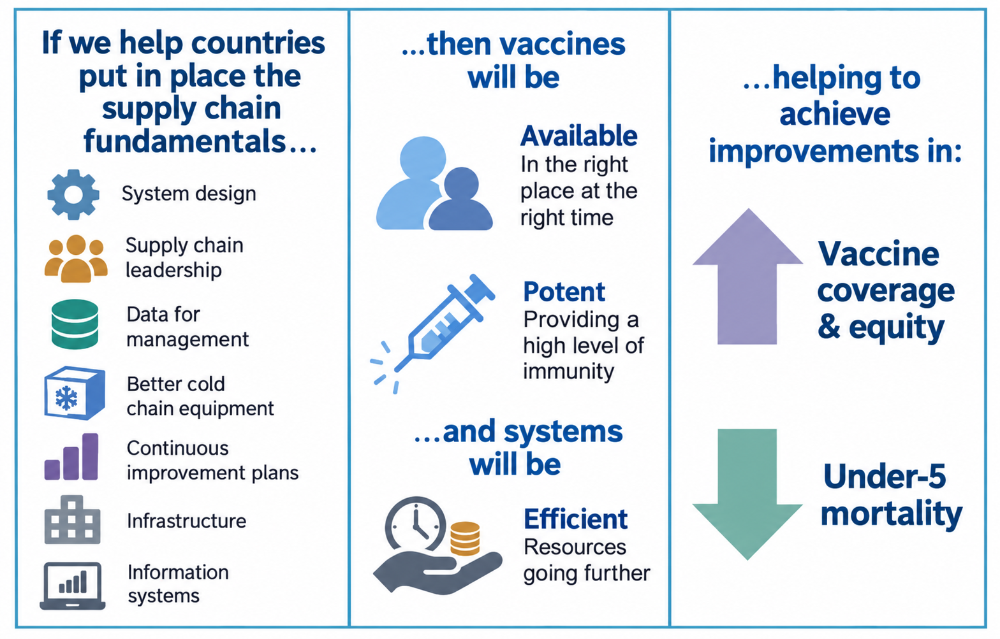
::: aside Gavi, the Vaccine Alliance- Immunization Supply Chain Strategy and Theory of Change :::A global initiative to improve immunisation supply chain
A national planning process endorsed and supported by WHO and UNICEF
Effective Vaccine Management (EVM) provides materials and tools needed to monitor and assess vaccine supply chains and help countries improve their supply chain performance.
EVM Framework
The EVM assessment framework defines the way in which vaccine supply chain systems are assessed.
It is organised by:
- Questions: are asked to assess whether a requirement has been met.
- Requirements: the attributes that a well-functioning immunisation supply chain must have.
- Requirements could be inputs, outputs or performance measures.
- Criteria: the operational or management functions that health facilities must perform.
- Categories: the necessary inputs, outputs and performance of health facilities.
- Assessments from 82 countries between 2019 and 2026
- 1286 potential questions
- Over 4000 health facilities
- 900 requirements, 19 criteria and 8 categories
- Scores range from 0 to 5
Data - Scores
EVM creates an analytical opportunity
EVM already tells us where requirements are being met.
But we want to go one step further:
Which requirements are associated with higher/lower vaccine availability?
We focus on Service Point (SP) facilities
Outcome: Vaccine availability (AV)
Independent variables of interest: The facility’s EVM requirements.
Context: Country and target population are used as adjustments rather than treated as the requirements of interest.
Availability is categorized and ordered
| Band | Availability |
|---|---|
| 1 — None | AV = 0 |
| 2 — Critical | 0 < AV ≤ 0.25 |
| 3 — Low | 0.25 < AV ≤ 0.50 |
| 4 — Moderate | 0.50 < AV ≤ 0.75 |
| 5 — Good | 0.75 < AV < 1 |
| 6 — Full | AV = 1 |
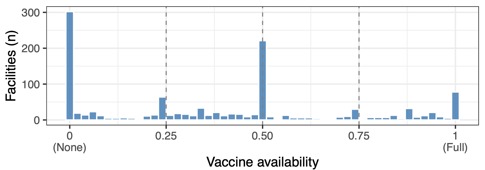
The analytical workflow
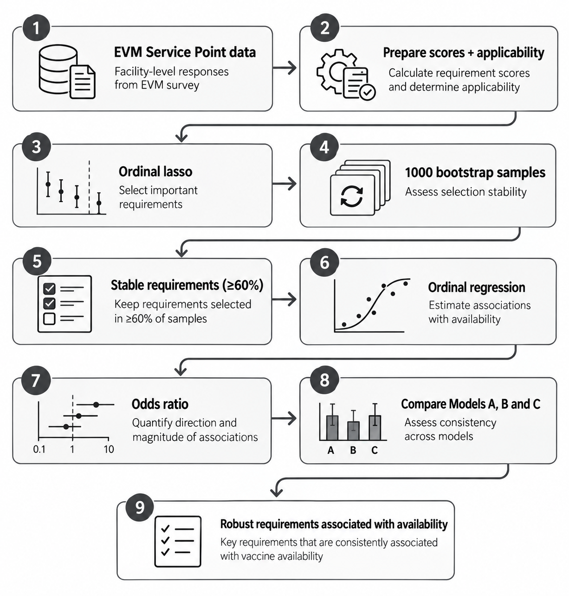
Results
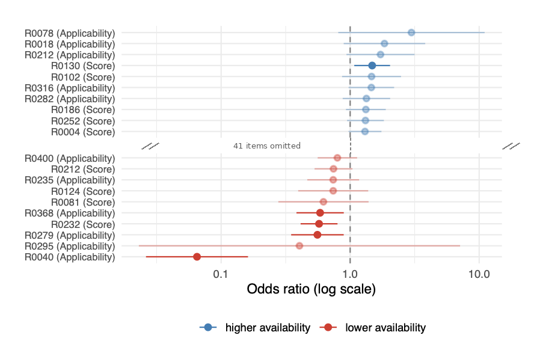
Results
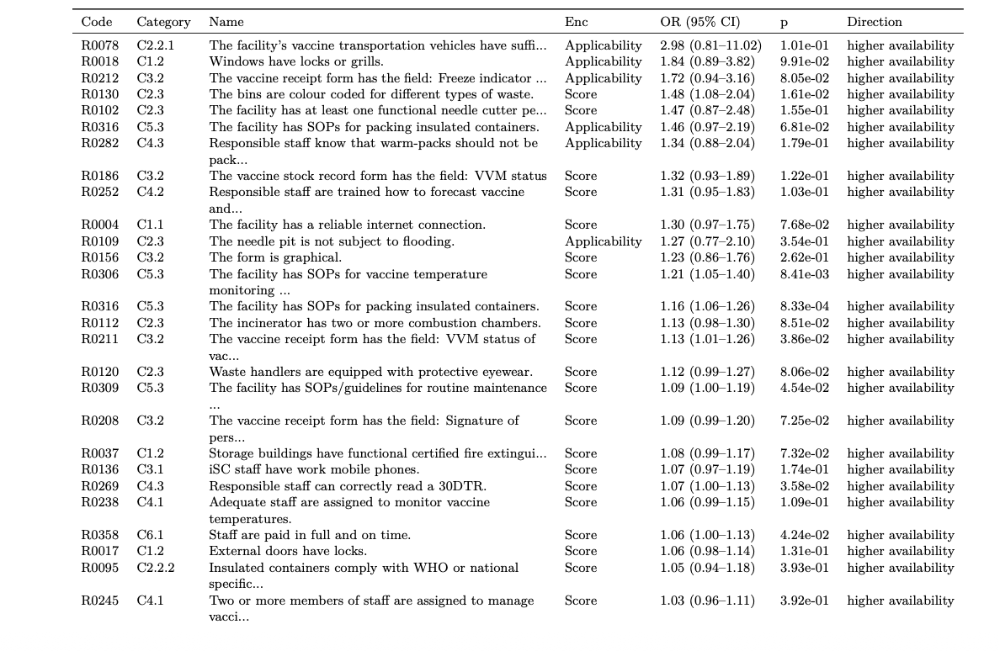
Agreement across models is the robust core
A requirement that changes direction or disappears across specifications should be treated more cautiously.
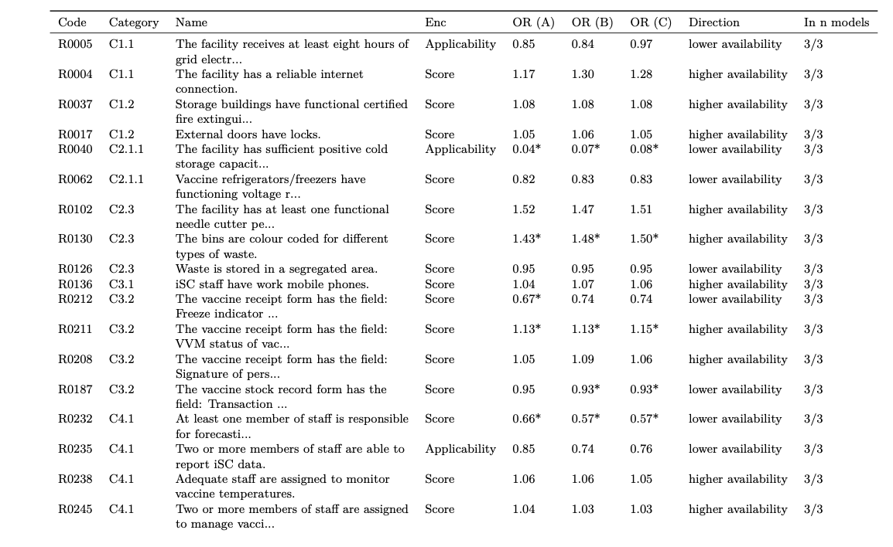
Supporting Gavi immunisation Supply Chain strategy 2026–2030
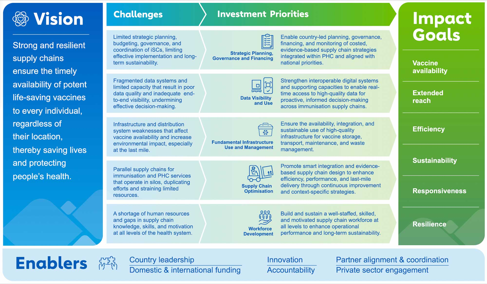
Next steps
- Model at the category level: Aggregate requirements into EVM function-category scores (cold storage, records, SOPs, staffing, funding…).
2. Test for bottlenecks: Use a decision tree to check if availability needs a critical few requirements together, not each alone.
3. Connect EVM to wider outcomes: Link EVM with country, UNICEF coverage and other external data to examine how supply-chain performance translates into vaccination outcomes.
4. Toward causal evidence: Repeated assessments over time , test whether improving a requirement raises availability.
References
Any questions or comments? 💬

Stage 1: Selecting the requirements
A penalised ordinal (cumulative-logit) lasso on all candidate requirements + population. Availability \(\text{AV}_i\) is one of six ordered bands.
\[ \text{logit}\big(P(\text{AV}_i \ge k)\big) = \beta_{0k} + \sum_{j=1}^{p}\Big( \beta_j R^{\text{s}}_{ij} + \gamma_j R^{\text{I}}_{ij} \Big) + \delta\,\text{Pop}_i \]
Coefficients minimise the penalised likelihood:
\[ \min \; \Big\{ -\ell(\boldsymbol\beta,\boldsymbol\gamma,\delta) + \lambda \sum_{j=1}^{p}\big(|\beta_j| + |\gamma_j|\big) \Big\} \]
- \(R^{\text{s}}_{ij}\) — score of requirement \(j\) (0–5)
- \(R^{\text{I}}_{ij}\) — applicability flag (1 = not applicable)
- \(\text{Pop}_i\) — \(\log_{10}\) target population
- \(\lambda\) — penalty strength (tuned by cross-validation)
What it does
- The penalty forces most coefficients to exactly zero.
- Repeated on 1000 bootstrap resamples → each requirement’s selection frequency.
- Keep those selected in ≥ 60% → shortlist \(\mathcal{S}\).
- Country is not in Stage 1 (enters only in Stage 2).
Stage 2: Estimating the odds ratios
The shortlist \(\mathcal{S}\) is re-fitted with an unpenalised mixed ordinal model, adding a country random intercept \(u_{c[i]}\):
\[ \text{logit}\big(P(\text{AV}_i \le k)\big) = \theta_k - \sum_{j \in \mathcal{S}}\Big( \beta_j R^{\text{s}}_{ij} + \gamma_j R^{\text{I}}_{ij} \Big) - \delta\,\text{Pop}_i - u_{c[i]} \]
\[ u_c \sim \mathcal{N}\!\big(0,\ \sigma^2_{\text{country}}\big) \]
Reportable effect size — the odds ratio:
\[ \text{OR}_j = e^{\beta_j}, \qquad \text{95\% CI} = e^{\,\beta_j \pm 1.96\,\text{SE}(\beta_j)} \]
- \(\mathcal{S}\) — requirements kept from Stage 1
- \(u_{c[i]}\) — country random intercept: each country its own baseline availability, drawn from a shared distribution
- \(\sigma^2_{\text{country}}\) — between-country variance
- \(\theta_k\) — the five band thresholds
Reading the OR
- \(\text{OR}_j > 1\) → higher availability
- \(\text{OR}_j < 1\) → lower availability
- Far from 1 = strong; interval excluding 1 = statistically clear
We ask the question three ways
Model B — Main
Across all facilities, which requirements are linked to availability?
Adjusts for country context and target population.
Model A — Country check
When facilities are compared within their own country, which requirements still matter?
Removes the possibility that a requirement looks important simply because of its country.
Model C — Size check
What happens when facility size is not used?
Checks whether findings are driven by target population.